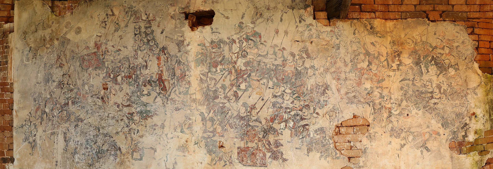

第一幕 回望五铺
五铺壁画，一场仪式
队伍、旗幡与瑞兽分布在不同墙面，留下祭祀与祈愿的线索。循着刚才的参观顺序，重新回望五铺壁画。
五铺壁画 · 参观入口
从中央大门进入，沿右侧走廊抵达第一铺。
图像 01 / 右侧走廊

骑乘与步行的队伍，
在墙面上展开。
图像 01 / 局部观察
全图位置 全幅
拖动平移 · 滚轮缩放
方向键移动 · 0 键复位
第一幕 回望五铺
队伍、旗幡与瑞兽分布在不同墙面，留下祭祀与祈愿的线索。循着刚才的参观顺序，重新回望五铺壁画。
第二幕 循迹仪式
第三幕 入画
再走近第二铺。沿着云纹，从整面墙看到一面旗、一把扇，或一个人的姿态，画里的场景也随之清晰起来。
进入后可选择图鉴或体感。体感模式需使用摄像头。
正在准备建筑与壁画…